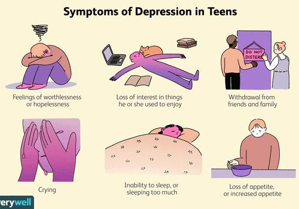

Mood Disorders
Stress is a normal human reaction that happens to everyone. In fact, the human body is designed to experience stress and react to it. When you experience changes or challenges (stressors), your body produces physical and mental responses. That’s stress.
Stress responses help your body adjust to new situations. Stress can be positive, keeping us alert, motivated and ready to avoid danger. For example, if you have an important test coming up, a stress response might help your body work harder and stay awake longer. But stress becomes a problem when stressors continue without relief or periods of relaxation.
Stress can lead to different mental illnesses
Depression

Depression ( major depressive disorder ) is a common and serious medical illness that negatively affects how you feel, the way you think and how you act. It is a disorder that cause feelings of sadness and/or a loss of interest in activities you once enjoyed. Because it affects the way you think, it can lead to a variety of emotional and physical problems and can even decrease your ability to function at work and at home.
Causes
- Family history.
- Early childhood trauma.
- Brain structure.
- Medical conditions.
- Drug use. Drug or alcohol misuse can affect your risk of depression as well.
You’re at a higher risk of developing depression if you have a family history of depression or another mood disorder.
Some events affect the way your body reacts to fear and stressful situations, especially if those events occurred during childhood.
There is a greater risk for depression if the frontal lobe of your brain is less active.
Certain conditions put you at a higher risk of depression, such as chronic illness, insomnia, chronic pain, or attention-deficit hyperactivity disorder (ADHD).
Symptoms
 image credits !How it affects their life
Their mental health may be negatively affected due to depression. For example, they may start to feel empty, lonely, sad , fatigued etc. Those diagnosed with depression usually have trouble with their memory and tend to be very indecisive. Not only can their mental health be affected, their physical body can too.
For example, their weight fluctuates as depressive people start to overeat or lose their appetite, which can lead to obesity-related illnesses or nutritional deficiencies. Not only that, their blood vessels may start to constrict, which increase the risk of cardiovascular diseases or heart attacks. Additionally, their pain sensitivity starts to increase, headaches and other types of pains occur more often as well. Medication usually does not make the cut. Lastly, depression weakens their immune system and ability to fight off diseases and viruses. This includes the common cold as well as more serious, long-term diseases like cardiovascular disease.
credits to healthline, psychiatry
Bipolar